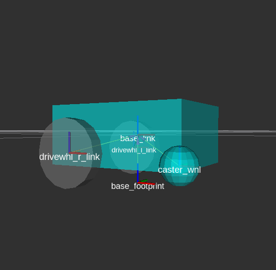
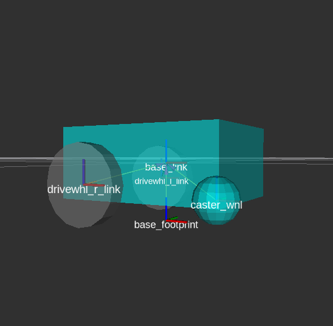
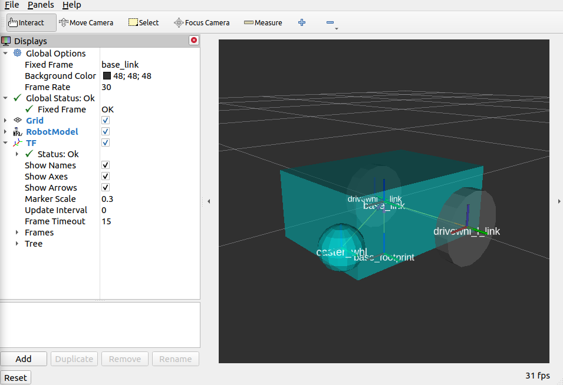

Setting Up The URDF¶
For this guide, we will be creating the URDF for a simple differential drive robot to give you hands-on experience on working with URDF. We will also setup the robot state publisher and visualize our model in RVIZ. Lastly, we will be adding some kinematic properties to our robot URDF to prepare it for simulation purposes. These steps are necessary to represent all the sensor, hardware, and robot transforms of your robot for use in navigation.
See also
The complete source code in this tutorial can be found in navigation2_tutorials repository under the sam_bot_description package
URDF and the Robot State Publisher¶
As discussed in the previous tutorial, one of the requirements for Navigation2 is the transformation from base_link to the various sensors and reference frames. This transformation tree can range from a simple tree with only one link from the base_link to laser_link or a tree comprised of multiple sensors located in different locations, each having their own coordinate frame. Creating multiple publishers to handle all of these coordinate frame transformations may become tedious. Therefore, we will be making use of the Robot State Publisher package to publish our transforms.
The Robot State Publisher is a package of ROS2 that interacts with the tf2 package to publish all of the necessary transforms that can be directly inferred from the geometry and structure of the robot. We need to provide it with the correct Universal Robot Descriptor File (URDF) and it will automatically handle publishing the transforms. This is very useful for complex transformations but it is still recommended for simpler transform trees.
The Universal Robot Descriptor File (URDF) is an XML file that represents a robot model. In this tutorial, it will mainly be used to build transformations trees related with the robot geometry, but it also has other uses. One example is how it can be used in visualizing your robot model in RVIZ, a 3D Visualization tool for ROS, by defining visual components such as materials and meshes. Another example is how the URDF can be used to define the physical properties of the robot. These properties are then used in physics simulators such as Gazebo to simulate how your robot will interact in an environment.
Another major feature of URDF is that it also supports Xacro (XML Macros) to help you create a shorter and readable XML to help in defining complex robots. We can use these macros to eliminate the need for repeating blocks of XML in our URDF. Xacro is also useful in defining configuration constants which can be reused throughout the URDF.
See also
If you want to learn more about the URDF and the Robot State Publisher, we encourage you to have a look at the official URDF Documentation and Robot State Publisher Documentation
Setting Up the Environment¶
In this guide, we are assuming that you are already familiar with ROS2 and how to setup your development environment, so we’ll breeze through the steps in this section.
Let’s begin by installing some additional ROS2 packages that we will be using during this tutorial.
sudo apt install ros-<ros2-distro>-joint-state-publisher-gui
sudo apt install ros-<ros2-distro>-xacro
Next, create a directory for your project, initialize a ROS2 workspace and give your robot a name. For ours, we’ll be calling it sam_bot.
ros2 pkg create --build-type ament_cmake sam_bot_description
Writing the URDF¶
See also
This section aims to provide you with a beginner-friendly introduction to building URDFs for your robot. If you would like to learn more about URDF and XAcro, we suggest for you to have a look at the official URDF Documentation
Now that we have our project workspace set up, let’s dive straight into writing the URDF. Below is an image of the robot we will be trying to build.
 

{kind=link}
To get started, create a file named
sam_bot_description.urdfundersrc/descriptionand input the following as the initial contents of the file.
1 2 3 4 5 6 | <?xml version="1.0"?>
<robot name="sam_bot" xmlns:xacro="http://ros.org/wiki/xacro">
</robot>
|
Note
The following code snippets should be placed within the <robot> tags. We suggest to add them in the same order as introduced in this tutorial. We have also included some line numbers to give you a rough idea on where to input the code. This may differ from the actual file you are writing depending on your usage of whitespaces. Also note that the line numbers assume that you are putting in code as they appear in this guide.
Next, let us define some constants using XAcro properties that will be reused throughout the URDF.
4 5 6 7 8 9 10 11 12 13 14 15 | <!-- Define robot constants -->
<xacro:property name="base_width" value="0.31"/>
<xacro:property name="base_length" value="0.42"/>
<xacro:property name="base_height" value="0.18"/>
<xacro:property name="wheel_radius" value="0.10"/>
<xacro:property name="wheel_width" value="0.04"/>
<xacro:property name="wheel_ygap" value="0.025"/>
<xacro:property name="wheel_zoff" value="0.05"/>
<xacro:property name="wheel_xoff" value="0.12"/>
<xacro:property name="caster_xoff" value="0.14"/>
|
Here is a brief discussion on what these properties will represent in our urdf. The base_* properties all define the size of hte robot’s main chassis. The wheel_radius and wheel_width define the shape of the robot’s two back wheels. The wheel_ygap adjusts the gap between the wheel and the chassis along the y-axis whilst wheel_zoff and wheel_xoff position the back wheels along the z-axis and x-axis appropriately. Lastly, the caster_xoff positions the front caster wheel along the x-axis.
Let us then define our base_link - this link will be a large box and will act as the main chassis of our robot. In URDF, a link element describes a rigid part or component of our robot. The robot state publisher then utilizes these definitions to determine coordinate frames for each link and publish the transformations between them.
We will also be defining some of the link’s visual properties which can be used by tools such as Gazebo and Rviz to show us a 3D model of our robot. Amongst these properties are <geometry> which describes the link’s shape and <material> which describes it’s color.
For the code block block below, we access the base properties from the robot constants sections we defined before using the ${property} syntax. In addition, we also set the material color of the main chassis to Cyan. Note that we set these parameters under the <visual> tag so they will only be applied as visual parameters which dont affect any collision or physical properties.
17 18 19 20 21 22 23 24 25 26 27 | <!-- Robot Base -->
<link name="base_link">
<visual>
<geometry>
<box size="${base_length} ${base_width} ${base_height}"/>
</geometry>
<material name="Cyan">
<color rgba="0 1.0 1.0 1.0"/>
</material>
</visual>
</link>
|
Next, let us define a base_footprint link. The base_footprint link is a virtual (non-physical) link which has no dimensions or collision areas. Its primary purpose is to enable various packages determine the center of a robot projected to the ground. For example, Navigation2 uses this link to determine the center of a circular footprint used in its obstacle avoidance algorithms. Again, we set this link with no dimensions and to which position the robot’s center is in when it is projected to the ground plane.
After defining our base_link, we then add a joint to connect it to base_link. In URDF, a joint element describes the kinematic and dynamic properties between coordinate frames. For this case, we will be defining a fixed joint with the appropriate offsets to place our base_footprint link in the proper location based on the description above. Remember that we want to set our base_footprint to be at the ground plane when projected from the center of the main chassis, hence we get the sum of the wheel_radius and the wheel_zoff to get the appropriate location along the z-axis.
29 30 31 32 33 34 35 36 | <!-- Robot Footprint -->
<link name="base_footprint" />
<joint name="base_joint" type="fixed">
<parent link="base_link"/>
<child link="base_footprint"/>
<origin xyz="0.0 0.0 ${-(wheel_radius+wheel_zoff)}" rpy="0 0 0"/>
</joint>
|
Now, we will be adding two large drive wheels to our robot. To make our code cleaner and avoid repetition, we will make use of macros to define a block of code that will be repeated with differing parameters. Our macro will have 3 params: prefix which simply adds a prefix to our link and joint names, and x_reflect and y_reflect which allows us to flip the positions of our wheels with respect to the x and y axis respectively. Within this macro, we can also define the visual properties of a single wheel. Lastly, we will also define a continuous joint to allow our wheels to freely rotate about an axis. This joint also connects our wheel to the base_link at the appropriate location.
At the end of this code block, we will be instantiating two wheels using the macro we just made through the xacro:wheel tags. Note that we also define the parameters to have one wheel on both sides at the back of our robot.
38 39 40 41 42 43 44 45 46 47 48 49 50 51 52 53 54 55 56 57 58 59 60 61 | <!-- Wheels -->
<xacro:macro name="wheel" params="prefix x_reflect y_reflect">
<link name="${prefix}_link">
<visual>
<origin xyz="0 0 0" rpy="${pi/2} 0 0"/>
<geometry>
<cylinder radius="${wheel_radius}" length="${wheel_width}"/>
</geometry>
<material name="Gray">
<color rgba="0.5 0.5 0.5 1.0"/>
</material>
</visual>
</link>
<joint name="${prefix}_joint" type="continuous">
<parent link="base_link"/>
<child link="${prefix}_link"/>
<origin xyz="${x_reflect*wheel_xoff} ${y_reflect*(base_width/2+wheel_ygap)} ${-wheel_zoff}" rpy="0 0 0"/>
<axis xyz="0 1 0"/>
</joint>
</xacro:macro>
<xacro:wheel prefix="drivewhl_l" x_reflect="-1" y_reflect="1" />
<xacro:wheel prefix="drivewhl_r" x_reflect="-1" y_reflect="-1" />
|
Next, we will be adding a caster wheel at the front of our robot. We will be modelling this wheel as a sphere to keep things simple. Again, we define the wheel’s geometry, material and the joint to connect it to base_link at the appropriate location.
63 64 65 66 67 68 69 70 71 72 73 74 75 76 77 78 79 | <!-- Caster Wheel -->
<link name="front_caster">
<visual>
<geometry>
<sphere radius="${-(wheel_radius+wheel_zoff-(base_height/2))}"/>
</geometry>
<material name="Cyan">
<color rgba="0 1.0 1.0 1.0"/>
</material>
</visual>
</link>
<joint name="caster_joint" type="fixed">
<parent link="base_link"/>
<child link="front_caster"/>
<origin xyz="${caster_xoff} 0.0 ${-(base_height/2)}" rpy="0 0 0"/>
</joint>
|
And that’s it! We have built a URDF for a simple differential drive robot. In the next section, we will focus on building the ROS Package containing our URDF, launching the robot state publisher, and visualizing the robot in RVIz.
Build and Launch¶
See also
The launch files from this tutorial were adapted from the official URDF Tutorials for ROS2
Let’s start this section by adding some dependencies that will be required once we build this project. Open up the root of your project directory and add the following lines to your package.xml (preferably after the <buildtool_depend> tag)
<exec_depend>joint_state_publisher</exec_depend>
<exec_depend>joint_state_publisher_gui</exec_depend>
<exec_depend>robot_state_publisher</exec_depend>
<exec_depend>rviz</exec_depend>
<exec_depend>xacro</exec_depend>
Next, let us create our launch file. Launch files are used by ROS2 to bring up the necessary nodes for our package. From the root of the project, create a directory named launch and a display.launch.py file within it. The launch file below launches a robot publisher node in ROS2 that uses our URDF to publish the transforms for our robot. In addition, the launch file also automatically launches RVIZ so we can visualize our robot as defined by the URDF. Copy and paste the snippet below into your display.launch.py file.
import launch
from launch.substitutions import Command, LaunchConfiguration
import launch_ros
import os
def generate_launch_description():
pkg_share = launch_ros.substitutions.FindPackageShare(package='sam_bot_description').find('sam_bot_description')
default_model_path = os.path.join(pkg_share, 'src/description/sam_bot_description.urdf')
default_rviz_config_path = os.path.join(pkg_share, 'rviz/urdf_config.rviz')
robot_state_publisher_node = launch_ros.actions.Node(
package='robot_state_publisher',
executable='robot_state_publisher',
parameters=[{'robot_description': Command(['xacro ', LaunchConfiguration('model')])}]
)
joint_state_publisher_node = launch_ros.actions.Node(
package='joint_state_publisher',
executable='joint_state_publisher',
name='joint_state_publisher',
condition=launch.conditions.UnlessCondition(LaunchConfiguration('gui'))
)
joint_state_publisher_gui_node = launch_ros.actions.Node(
package='joint_state_publisher_gui',
executable='joint_state_publisher_gui',
name='joint_state_publisher_gui',
condition=launch.conditions.IfCondition(LaunchConfiguration('gui'))
)
rviz_node = launch_ros.actions.Node(
package='rviz2',
executable='rviz2',
name='rviz2',
output='screen',
arguments=['-d', LaunchConfiguration('rvizconfig')],
)
return launch.LaunchDescription([
launch.actions.DeclareLaunchArgument(name='gui', default_value='True',
description='Flag to enable joint_state_publisher_gui'),
launch.actions.DeclareLaunchArgument(name='model', default_value=default_model_path,
description='Absolute path to robot urdf file'),
launch.actions.DeclareLaunchArgument(name='rvizconfig', default_value=default_rviz_config_path,
description='Absolute path to rviz config file'),
joint_state_publisher_node,
joint_state_publisher_gui_node,
robot_state_publisher_node,
rviz_node
])
See also
For more information regarding the launch system in ROS2, you can have a look at the official ROS2 Launch System Documentation
To keep things simpler when we get to visualization, we have provided an RVIz config file that will be loaded when we launch our package. This configuration file initializes RVIz with the proper settings so you can view the robot immediately once it launches. Create a directory named rviz in the root of your project and a file named urdf_config.rviz under it. Place the following as the contents of urdf_config.rviz
Panels:
- Class: rviz_common/Displays
Help Height: 78
Name: Displays
Property Tree Widget:
Expanded:
- /Global Options1
- /Status1
- /RobotModel1/Links1
- /TF1
Splitter Ratio: 0.5
Tree Height: 557
Visualization Manager:
Class: ""
Displays:
- Alpha: 0.5
Cell Size: 1
Class: rviz_default_plugins/Grid
Color: 160; 160; 164
Enabled: true
Name: Grid
- Alpha: 0.6
Class: rviz_default_plugins/RobotModel
Description Topic:
Depth: 5
Durability Policy: Volatile
History Policy: Keep Last
Reliability Policy: Reliable
Value: /robot_description
Enabled: true
Name: RobotModel
Visual Enabled: true
- Class: rviz_default_plugins/TF
Enabled: true
Name: TF
Marker Scale: 0.3
Show Arrows: true
Show Axes: true
Show Names: true
Enabled: true
Global Options:
Background Color: 48; 48; 48
Fixed Frame: base_link
Frame Rate: 30
Name: root
Tools:
- Class: rviz_default_plugins/Interact
Hide Inactive Objects: true
- Class: rviz_default_plugins/MoveCamera
- Class: rviz_default_plugins/Select
- Class: rviz_default_plugins/FocusCamera
- Class: rviz_default_plugins/Measure
Line color: 128; 128; 0
Transformation:
Current:
Class: rviz_default_plugins/TF
Value: true
Views:
Current:
Class: rviz_default_plugins/Orbit
Name: Current View
Target Frame: <Fixed Frame>
Value: Orbit (rviz)
Saved: ~
Lastly, let us modify the CMakeLists.txt file in the project root directory to include the files we just created during the package installation process. Add the following snippet to CMakeLists.txt file preferrably above the if(BUILD_TESTING) line:
install(
DIRECTORY src launch rviz
DESTINATION share/${PROJECT_NAME}
)
We are now ready to build our project using colcon. Navigate to the project root and execute the following commands.
colcon build
. install/setup.bash
After a successful build, execute the following commands to install the ROS2 package and launch our project.
ros2 launch sam_bot_description display.launch.py
ROS2 should now launch a robot publisher node and start up RVIZ using our URDF. We’ll be taking a look at our robot using RVIZ in the next section.
Visualization using RVIZ¶
RVIZ is a robot visualization tool that allows us to see a 3D model of our robot using its URDF. Upon a successful launch using the commands in the previous section, RVIZ should now be visible on your screen and should look like the image below. You may need to move around and manipulate the view to get a good look at your robot.
As you can see, we have successfully created a simple differential drive robot and visualized it in RVIz. It is not necessary to visualize your robot in RVIz, but it’s a good step in order to see if you have properly defined your URDF. This helps you ensure that the robot state publisher is publishing the correct transformations.
You may have noticed that another window was launched - this is a GUI for the joint state publisher. The joint state publisher is another ROS2 package which publishes the state for our non-fixed joints. You can manipulate this publisher through the small GUI and the new pose of the joints will be reflected in RVIz. Sliding the bars for any of the two wheels will rotate these joints. You can see this in action by viewing RVIZ as you sweep the sliders in the Joint State Publisher GUI.

Note
We won’t be interacting much with this package for Nav2, but if you would like to know more about the joint state publisher, feel free to have a look at the official Joint State Publisher Documentation.
At this point, you may already decide to stop with this tutorial since we have already achieved our objective of creating a URDF for a simple differential drive robot. The robot state publisher is now publishing the transforms derived from the URDF. These transforms can now be used by other packages (such as Nav2) to get information regarding the shape and structure of your robot. However, to properly use this URDF in a simulation, we need physical properties so that the robot reacts to physical environments like a real robot would. The visualization fields are only for visualization, not collision, so your robot will drive straight through obstacles. We’ll get into adding these properties in our URDF in the next section.
Adding Physical Properties¶
As an additional section to this guide, we will be modifying our current URDF to include some of our robot’s kinematic properties. This information may be used by physics simulators such as Gazebo to model and simulate how our robot will act in the virtual environment.
Let us first define macros containing the inertial properties of the geometric primitives we used in our project. Place the snippet below after our constants section in the URDF:
17 18 19 20 21 22 23 24 25 26 27 28 29 30 31 32 33 34 35 36 37 | <!-- Define intertial property macros -->
<xacro:macro name="box_inertia" params="m w h d">
<inertial>
<mass value="${m}"/>
<inertia ixx="${(m/12) * (h*h + d*d)}" ixy="0.0" ixz="0.0" iyy="${(m/12) * (w*w + d*d)}" iyz="0.0" izz="${(m/12) * (w*w + h*h)}"/>
</inertial>
</xacro:macro>
<xacro:macro name="cylinder_inertia" params="m r h">
<inertial>
<mass value="${m}"/>
<inertia ixx="${(m/12) * (3*r*r + h*h)}" ixy = "0" ixz = "0" iyy="${(m/12) * (3*r*r + h*h)}" iyz = "0" izz="${(m/2) * (r*r)}"/>
</inertial>
</xacro:macro>
<xacro:macro name="sphere_inertia" params="m r">
<inertial>
<mass value="${m}"/>
<inertia ixx="${(2/5) * m * (r*r)}" ixy="0.0" ixz="0.0" iyy="${(2/5) * m * (r*r)}" iyz="0.0" izz="${(2/5) * m * (r*r)}"/>
</inertial>
</xacro:macro>
|
Let us start by adding collision areas to our base_link using the <collision> tag. We will also be using the box_inertia macro we defined before to add some inertial properties to our base_link. Include the following code snippet within <link name="base_link"> tag of base_link in our URDF.
50 51 52 53 54 55 56 | <collision>
<geometry>
<box size="${base_length} ${base_width} ${base_height}"/>
</geometry>
</collision>
<xacro:box_inertia m="15" w="${base_width}" d="${base_length}" h="${base_height}"/>
|
Next, let us do the same for our wheel macros. Include the following code snippet within the <link name="${prefix}_link"> tag of our wheel macros in our URDF.
81 82 83 84 85 86 87 88 | <collision>
<origin xyz="0 0 0" rpy="${pi/2} 0 0"/>
<geometry>
<cylinder radius="${wheel_radius}" length="${wheel_width}"/>
</geometry>
</collision>
<xacro:cylinder_inertia m="0.5" r="${wheel_radius}" h="${wheel_width}"/>
|
Lastly, let us add the similar properties to our spherical caster wheels. Include the following in the <link name="front_caster"> tag of our caster wheel in the URDF.
113 114 115 116 117 118 119 120 | <collision>
<origin xyz="0 0 0" rpy="0 0 0"/>
<geometry>
<sphere radius="${-(wheel_radius+wheel_zoff-(base_height/2))}"/>
</geometry>
</collision>
<xacro:sphere_inertia m="0.5" r="${-(wheel_radius+wheel_zoff-(base_height/2))}"/>
|
Note
We did not add any inertial or collision properties to our base_footprint link since this is a virtual and non-physical link.
Build your project and then launch RViz using the same commands in the previous section.
colcon build
. install/setup.bash
ros2 launch sam_bot_description display.launch.py
You can verify whether you have properly set up the collision areas by enabling Collision Enabled under RobotModel on the left pane (it may be easier to see if you also turn off Visual Enabled). For this tutorial we defined a collision area which is similar to our visual properties. Note that this may not always be the case since you may opt for simpler collision areas based on how your robot looks.

For now, we will have to stop here since we will need to set up a lot more components to actually start simulating our robot in Gazebo. We will be coming back to this project during the course of these setup guides, and we will eventually see our robot move in a virtual environment once we get to the simulation sections. The major components that are missing from this work are the simulation plugins required to mimic your robot controllers. We will introduce those and add them to this UDRF in the appropriate section.
Conclusion¶
And that’s it. In this tutorial, you have successfully created a URDF for a simple differential drive robot. You have also set up a ROS2 project that launches a robot publisher node, which then uses your URDF to publish the robot’s transforms. We have also used RViz to visualize our robot to verify whether our URDF is correct. Lastly, we have added in some physical properties to our URDF in order to prepare it for simulation.
Feel free to use this tutorial as a template for your own robot. Remember that your main goal is to publish the correct transforms from your base_link up to your sensor_frames. Once these have been setup, then you may proceed to our other setup guides.